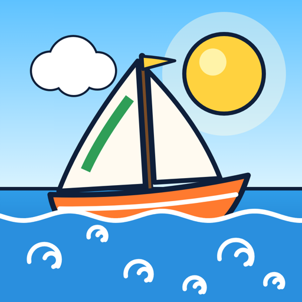

ConsultingConseil
Catgrep is the consulting company of Paul Renson. Today Paul is Head of Engineering & Data at Sortlist, where he helps a team of engineers ship product, keep the data honest and spend their days arguing politely with AI agents. Before that: a decade of writing actual code (iOS, full stack, one co-founded startup), which he still does whenever nobody is watching. Catgrep, c'est la société de conseil de Paul Renson. Aujourd'hui, Paul est Head of Engineering & Data chez Sortlist, où il aide une équipe d'ingénieurs à livrer du produit, à garder des données honnêtes et à passer leurs journées à discuter poliment avec des agents IA. Avant ça : une dizaine d'années à écrire du vrai code (iOS, full stack, une startup cofondée), ce qu'il fait encore dès que personne ne regarde.
Engineering leadershipDirection technique
Teams, delivery, architecture, the occasional difficult conversation. Meetings kept short on purpose.Équipes, delivery, architecture, et parfois une conversation difficile. Réunions courtes, exprès.
Data & AIData & IA
Data models, dashboards people actually open, and AI agents that do real work instead of demos.Modèles de données, dashboards que les gens ouvrent vraiment, et agents IA qui travaillent pour de vrai, pas juste en démo.
Hands on keyboardLes mains dans le code
iOS, web, backend. Still writes code, still reads the stack trace before blaming the network.iOS, web, backend. Écrit toujours du code, lit toujours la stack trace avant d'accuser le réseau.
About the name: yes, cat file | grep pattern is a useless use of cat. grep pattern file does the same job. We know. We kept the cat.
Pour le nom : oui, cat fichier | grep motif est un usage inutile de cat. grep motif fichier fait la même chose. On sait. On a gardé le chat.

Tailwind
Tailwind is a dice-driven sailing race in a hand-drawn storybook world. Pick your die, merge them, ride the others' wake and the dolphins all the way to Admiral Corbeau's Armada. Tailwind est une course de voiliers aux dés, façon carnet de bord dessiné à la main. Choisis ton dé, fusionne-les, prends le sillage des autres et file avec les dauphins jusqu'à l'Armada de l'Amiral Corbeau.
Made by Catgrep Studio, which is the same person as above, on evenings he should have spent sleeping. Fait par Catgrep Studio, c'est-à-dire la même personne qu'au-dessus, les soirs où il aurait dû dormir.
Discover TailwindDécouvrir TailwindContact
Project, question or just want to say hi: Un projet, une question ou juste envie de dire bonjour : hello@catgrep.be